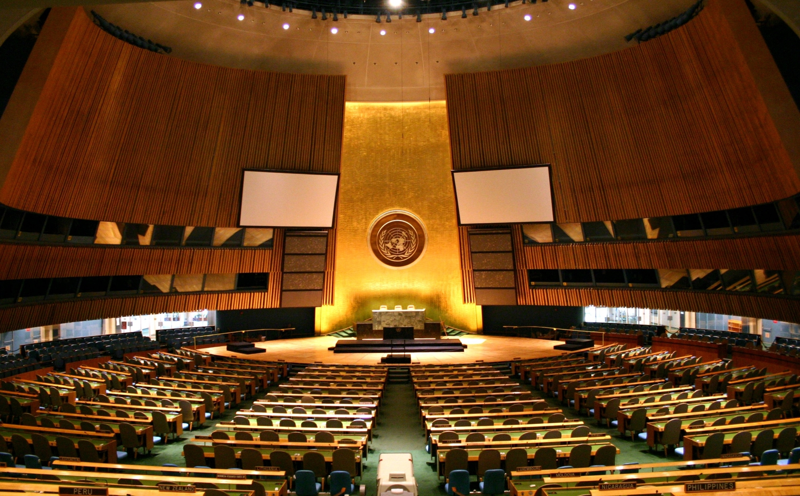

- Întâlnirea tuturor membrilor -
- discută recomandări sau sugestii date statelor membre sau Consiliului de securitate al ONU
- decide admiterea de noi membri, conform propunerilor date de Consiliul de Securitate al ONU
- adoptă bugetul
- alege membrii temporari ai Consiliului de securitate al ONU, toți membrii Consiliului Economic și Social, Secretarul general al Națiunilor Unite, după propunerea acestuia din partea Consiliului de securitate al Națiunilor Unite și a 15 judecători de la Curtea internațională de justiție.
- fiecare țară are un vot.
- Instituția administrativă a Națiunilor Unite -
- susține alte agenții specializate
- președintele - Secretarul General al Națiunilor Unite - este votat de Adunarea Generală a Națiunilor Unite și are un mandat de 5 ani.
- - Curtea universală de drept internațional - -

- ia decizii cu privire la disputele dintre state și emite decizii cu valoare legală.
- cei 15 judecători sunt aleși de Adunarea Generală a Națiunilor Unite și au mandate pe 9 ani.
- pentru problemele de siguranță -

- responsabil pentru menținerea păcii la nivel internațional
- poate adopta rezoluții ale Consiliului de Securitate al ONU
- are 15 membri: membrii permanenți ai Consiliului de Securitate al ONU cu putere de veto (China, Franța, Rusia, Marea Britanie și Statele Unite) și 10 membri aleși ai Consiliului de Securitate al ONU
- pentru politicile economice și sociale -
- responsabil pentru comunicarea dintre state pe domeniile economic și social
- coordonează cooperarea dintre agențiile specializate
- pentru politicile economice și sociale -
- la început avea rolul de a administra domeniile coloniale care erau sub mandatul Societății Națiunilor
- și-a sistat activitatea în 1994, când statul Palau a devenit independent